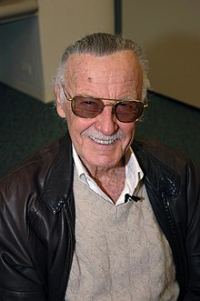

Stan Lee (născut Stanley Martin Lieber 28 decembrie 1922,Manhattan, New York, SUA – d. 12 noiembrie 2018, Beverly Grove California, SUA) a fost un scriitor american de benzi desenate, redactor, actor, producător, editor, personalitate de televiziune. Stan Lee este creatorul personajului Spider-Man (Omul-Păianjen).
S-a născut în Manhattan/New York, în apartamentul părinților săi, evrei emigrați din România. Tatăl, Jack Lieber, croitor de meserie, lucra ocazional, neavând o clientelă stabilă, iar mama Celia, era casnică. În timpul crizei economice mondiale de la sfârșitul anilor '20, familia fiind săracă, s-a mutat în Bronx, unde locuiau patru persoane într-o cameră (părinții, el și fratele mai mic). Cu toate că era la o vârstă fragedă, câștiga un bănuț vânzând pe stradă ziarul „New York Herald Tribune”, făcând pe ușierul la Teatrul Rivoli de pe Broadway, livrând sandwich-uri funcționarilor din Rockefeller Center sau scriind rapoarte pentru presă din partea Centrului Național de Tuberculoză.
Cu ajutorul unui unchi, R. Solomon, care lucra ca textier la reviste de duzină de benzi desenate (numite popular „pulp fiction”, din cauza calității slabe a hârtiei pe care erau tipărite) și a editorului Martin Goodman, căsătorit cu o verișoară de-a lui, începe să lucreze la revista Captain America Comics. Prima lui semnătură ca textier la o bandă desenată datează din mai 1941. Din această perioadă datează pseudonimul lui, Stan Lee, pe care mai târziu îl va legaliza ca nume. Din 1942 și până în 1945 este înrolat în US Army, la secția de propagandă militară, unde scrie, colaborează la filme militare și ocazional desenează.
Împreună cu mai mulți artiști (mai ales Jack Kirby și Steve Ditko), a creat multe caractere, cum ar fi: Spider-Man, Fantastic Four, X-Men, Avengers, Iron Man, Hulk, Thor, Daredevil, Doctor Strange, etc. Compania Marvel Comics la care a fost unul din principalii creatori a devenit o corporație multimedia care a dominat domeniul benzilor desenate (comics).
Moare pe 12 Noiembrie 2018, la vârsta de 95 de ani, în Beverly Grove, Statele Unite. El este unul din cei mai renumiți creatori de benzi desenate din America.